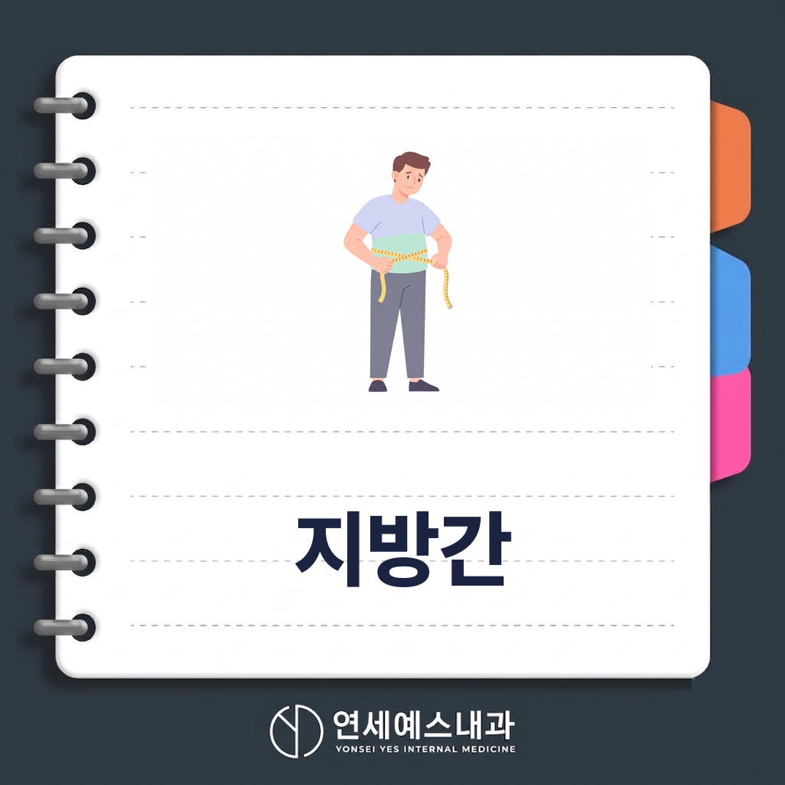
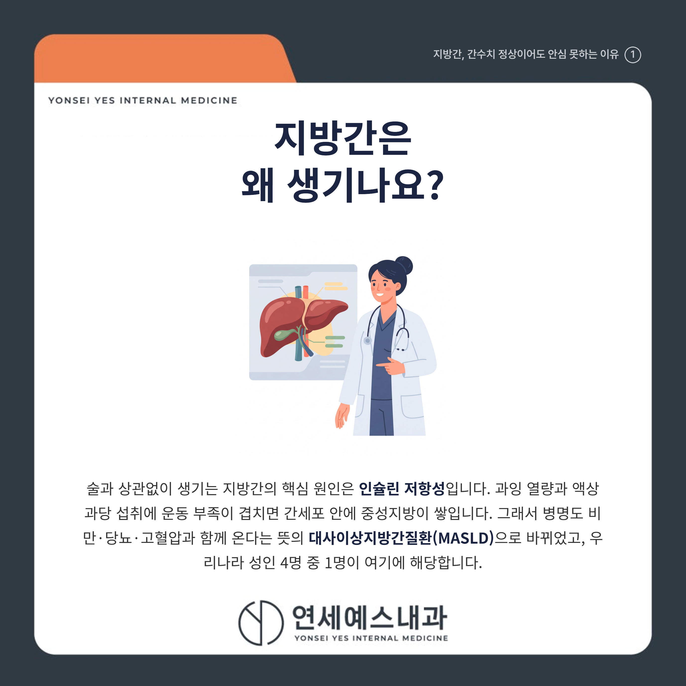
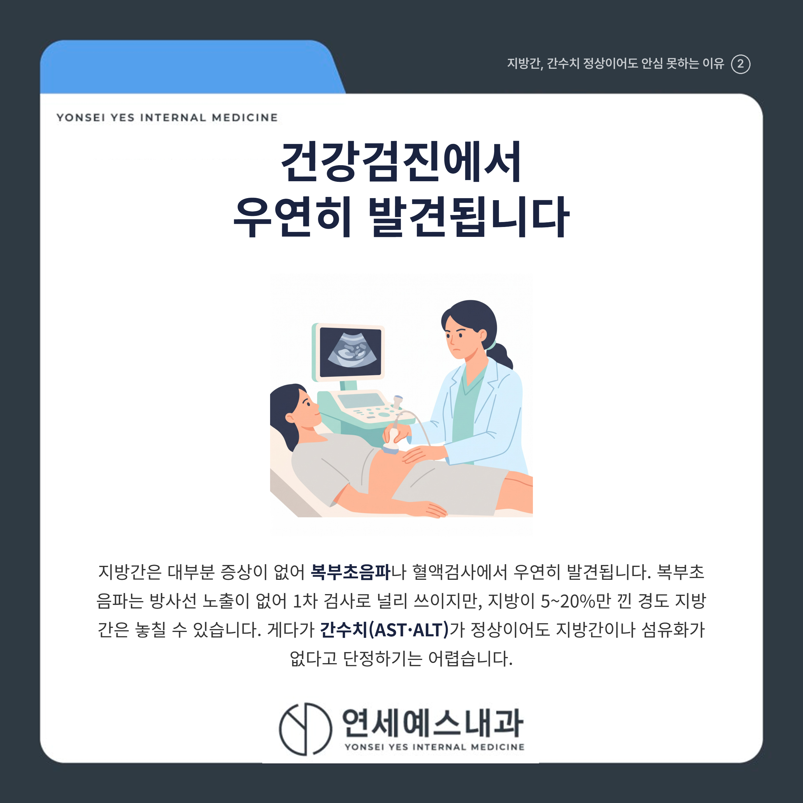
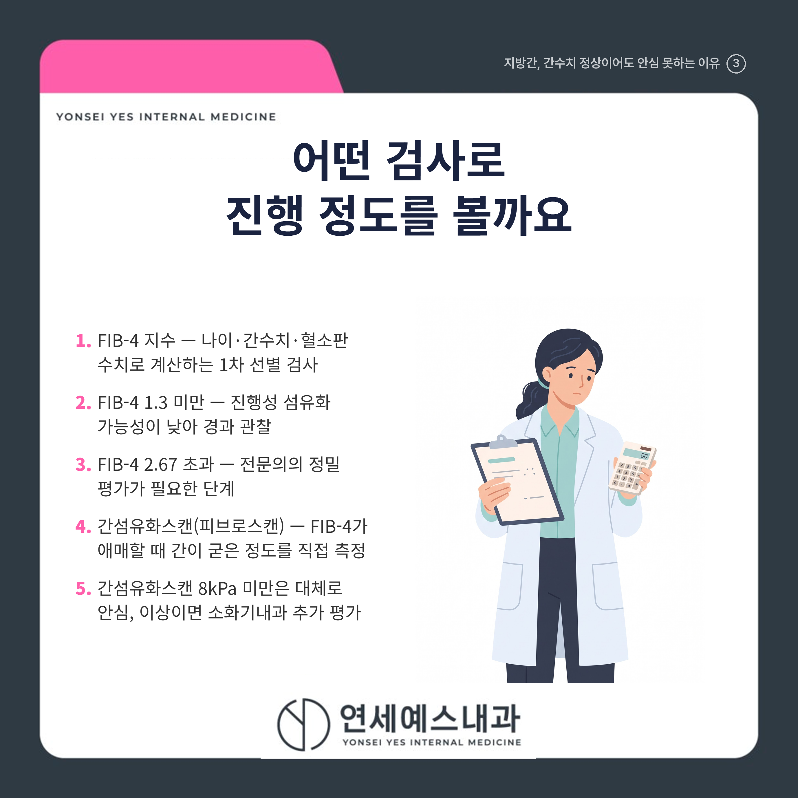
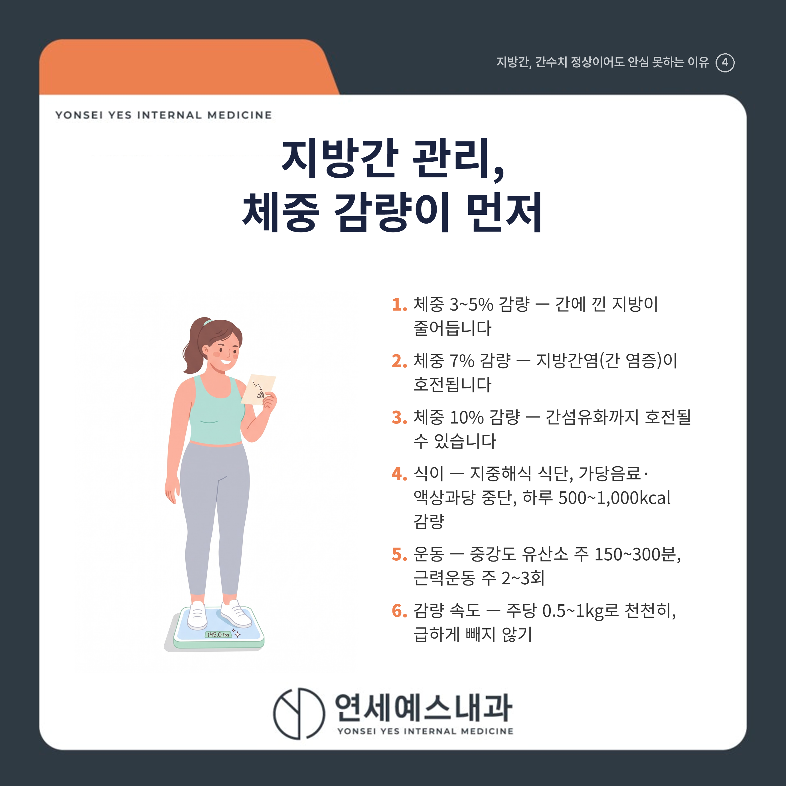

지방간 관리 3가지, 체중 5%부터 줄이기

안녕하세요! 여러분의 건강 주치의 연세예스내과입니다. 😊
미뤄뒀던 직장 건강검진을 하반기에 몰아서 받는 분들이 많은 요즘입니다.
결과지에서 '지방간 의심' 소견을 보고도 '술도 안 마시는데 무슨 지방간이야.' 하며 대수롭지 않게 넘기시는 분들이 많습니다.
결론부터 말씀드리면, 간수치가 정상이어도 지방간이나 간섬유화가 숨어 있을 수 있어 '수치 정상=이상 없음'으로 안심하기 어렵습니다.
그래서 복부초음파에서 지방간 소견을 받았다면 섬유화가 어느 정도 진행했는지 확인하는 것이 먼저입니다.
그리고 지방간을 되돌리는 1차 치료는 약이 아니라 체중을 3~5%부터 줄이는 생활습관 교정입니다.
1. 🩺 지방간은 왜 생기나요?
술과 상관없이 생기는 지방간의 핵심 원인은 인슐린 저항성(인슐린이 제 역할을 못 하는 상태)입니다.
과잉 열량과 액상과당 섭취에 운동 부족이 겹치면, 간세포 안에 중성지방이 쌓이게 됩니다.

그래서 최근에는 병명도 대사이상지방간질환(MASLD)으로 바뀌었습니다. 비만, 당뇨, 고혈압, 이상지질혈증 같은 대사 이상과 함께 오는 병이라는 뜻입니다.
우리나라 성인의 약 24%, 4명 중 1명이 여기에 해당합니다. 마른 체형이어도 내장지방이 많으면 생길 수 있습니다.
2. 🔍 건강검진에서 우연히 발견됩니다
지방간은 대부분 증상이 없어 복부초음파나 혈액검사에서 우연히 발견됩니다.
복부초음파는 방사선 노출이 없어 1차 검사로 널리 쓰이지만, 지방이 5~20%만 낀 경도 지방간은 놓칠 수 있습니다.

지방간이 있어도 간수치(AST·ALT)가 정상 범위인 경우가 매우 흔하고, 간경변으로 진행한 환자도 최대 80%가량은 ALT가 정상으로 나옵니다.
간수치가 정상이라고 지방간이나 섬유화가 없는 것은 아닙니다.
3. ⚠️ 방치하면 어디까지 진행하나요?
단순 지방간은 지방간염(간에 염증이 생긴 단계), 간섬유화, 간경변, 간암 순으로 진행할 수 있습니다.
모든 지방간이 나빠지는 것은 아니지만, 지금 어느 단계인지는 검사 전에는 알 수 없습니다.
특히 섬유화가 얼마나 진행했는지가 앞으로의 경과를 좌우하는 핵심 지표입니다.
게다가 지방간 환자의 사망 원인 1위는 심근경색·뇌졸중 같은 심혈관질환으로, 전체 사망의 약 절반을 차지합니다.
Q. 지방간, 어떤 검사로 진행 정도를 확인하나요?
혈액검사로 계산하는 FIB-4 지수로 먼저 선별하고, 애매하면 간섬유화스캔(피브로스캔)으로 간이 얼마나 굳었는지 측정합니다.
FIB-4는 나이와 간수치, 혈소판 수치로 계산합니다. 1.3 미만이면 진행성 섬유화 가능성이 낮고, 2.67을 넘으면 전문의 평가가 필요합니다.

간섬유화스캔 수치가 8kPa 미만이면 대체로 안심할 수 있고, 그 이상이면 소화기내과 전문의의 추가 평가를 권합니다.
4. 🏃 지방간 관리 핵심 3가지
비알코올성 지방간의 1차 치료는 약이 아니라 체중 감량, 식이, 운동입니다.

| 관리 | 핵심 목표 |
|---|---|
| 체중 감량 | 3~5% 줄이면 간 지방 감소, 7%는 지방간염 호전, 10%는 섬유화 호전 |
| 식이 | 지중해식 식단, 가당음료·액상과당 중단, 하루 500~1,000kcal 감량 |
| 운동 | 중강도 유산소 주 150~300분과 근력운동 주 2~3회 |
체중은 급하게 빼지 말고 주당 0.5~1kg 정도로 천천히 줄이는 것이 좋습니다.
한국 성인 연구에서 체중 변화가 없어도 규칙적인 운동만으로 간 지방과 인슐린 저항성이 좋아졌습니다.
✅ 추적검사, 얼마나 자주 받아야 하나요?
[ ] 저위험군(FIB-4 1.3 미만): 1~3년마다 재평가
[ ] 중등도 위험군(FIB-4 1.3~2.67): 2~3년마다 간섬유화스캔 재평가
[ ] 진행성 섬유화·전문의 관리군: 6~12개월마다 추적
[ ] 간경변: 6개월마다 복부초음파로 간암 감시
🚑 언제 병원에 가야 하나요?
아래 중 하나라도 해당한다면 미루지 말고 가까운 내과에서 추가 검사를 받아 보시기 바랍니다.
[ ] FIB-4 지수가 2.67을 넘거나 간섬유화스캔이 8kPa 이상으로 나왔다
[ ] 건강검진 때마다 간수치(AST·ALT)가 계속 높게 나온다
[ ] 당뇨나 비만이 있으면서 복부초음파에서 중등도 이상 지방간 소견을 받았다
[ ] 갑작스러운 체중 감소, 황달, 복수 등 간기능 저하가 의심되는 증상이 있다
지방간은 혈당, 혈압, 콜레스테롤 관리와 함께 봐야 하는 병입니다.
"지방간 관리는 간과 심장, 혈관을 함께 지키는 일입니다."
건강검진에서 지방간이나 간수치 이상을 확인하셨다면, 가까운 내과에서 섬유화 위험도와 대사 상태를 함께 평가받아 보시기 바랍니다.
※ 모든 치료 및 예방접종은 개인의 상태에 따라 발열, 통증, 알레르기 반응 등의 부작용이 나타날 수 있으므로, 반드시 의료진과 충분한 상담 후 진행하시기 바랍니다.
연세예스내과에서 전해드리는 건강 정보였습니다. 오늘도 건강하고 평안한 하루 보내세요!

#지방간 #비알코올성지방간 #지방간관리 #시민공원역의원 #시민공원역내과의원 #주안사거리내과 #주안사거리의원 #주안사거리내과의원 #미추홀내과 #미추홀의원